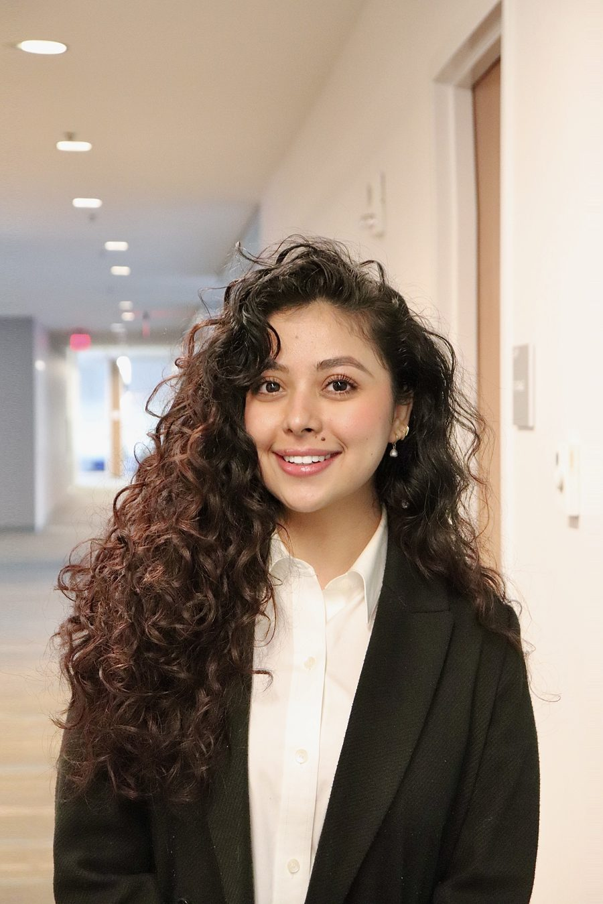
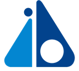

Hi, I'm Spriha.
Computer Science graduate (Suffolk University) with backend development experience and an unusually deep record of leading people — front-desk operations, student outreach, residence life, peer counseling. Looking for a client-facing technology role where both sides of that get used at once.

It watches what's in your fridge and nudges you before food goes bad — built in Swift with a Supabase backend, and earned an Honorable Mention at HackBeanpot.
The short version of how a CS degree and a leadership resume ended up in the same place, plus the timeline that got me here.
I write backend code — Python, Java, C++, Swift — and I've spent just as much time on the other side of a desk: answering questions, calming down a frustrated resident at 2am, walking a nervous prospective student through campus, resolving an IT ticket for someone who just wants their laptop to work again.
Most people pick one lane. I kept both, on purpose. A client-facing technology role is where they're actually the same job: understand the system well enough to fix it, and understand the person well enough to explain it.
Honors: CAS Commencement Student Speaker, International Student of the Year, Journey Leadership Award, Dean's List
Leadership: President, Nepali Student Association · International Senator-at-Large · Treasurer, Computer Science Club
Honors: Commencement Student Speaker, President's Award, Excellence in Leadership Award, Dean's List
Two tracks that ran in parallel through school — technical work on one side, people-facing leadership on the other.

Contributed ~15% of an AI-powered enterprise banking application — backend components for data processing, system integration, and scalable workflows. Processed datasets with Python, pandas, and NumPy to prep data for the AI models.
Resolved 10–15 support tickets a day — hardware, software, Windows accounts, desktop configuration. Ran weekly projects on workstation imaging, software deployment, and technical documentation.
Ran front-desk operations and scheduled tutoring appointments as the primary point of contact for 30+ faculty, staff, and students.
Led 80+ campus tours and admissions events, giving prospective students and families personalized guidance through enrollment.
Supported 30+ residents and covered on-call for 100+, handling emergencies, conflict resolution, and monthly community programming.
Provided peer outreach and emotional support using NAMI NH training, guiding students to the right resources.
Represented the college on tours and info sessions, connecting one-on-one with prospective students.
Supported Communications and Cross-Cultural Education courses through mentoring and office hours.
The "read as" toggle in the nav applies here too — technical spec or plain-English pitch.
Sustainable food-inventory app built in Swift with a Supabase backend — expiry tracking, notifications, and a full UI layer, built solo end-to-end during a 24-hour hackathon.
An app that tells you what's about to go bad in your fridge before you waste it. Placed at HackBeanpot for tackling household food waste with a genuinely usable design.
Web-based trekking platform with an AI-powered chatbot; contributed research on trekking routes and safety data plus the final technical presentation.
A trekking companion that answers route and safety questions before you're out of signal — built for hikers in Nepal, and a finalist at the Nepal–US AI Hackathon.
Task management app in Python/Django with SQLite, RESTful APIs, secure authentication, and full CRUD functionality.
A task tracker teams can actually rely on — secure logins and everything you'd expect for creating, updating, and closing out work.
Lightweight HTTP server written in C++ — API endpoints, request validation, and job scheduling implemented from scratch.
Built a working web server from the ground up in C++, down to how it schedules and validates every request that hits it.
Have an opportunity, or just want to chat? I'd love to hear from you.